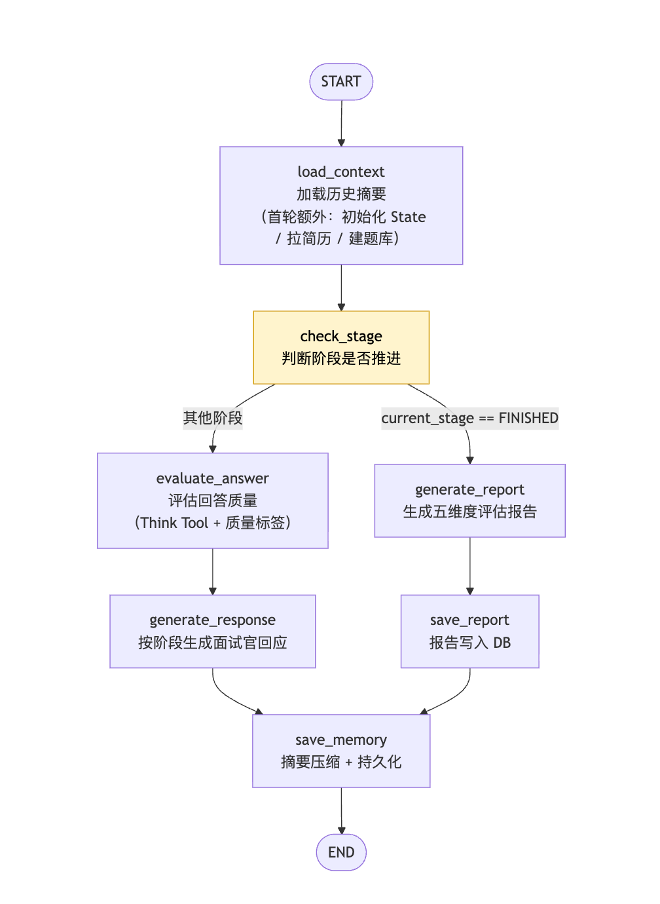

7.1 模拟面试 Agent 全景¶
学习目标¶
- 理解为什么用状态机驱动面试，而不是简单的多轮对话
- 掌握四个面试阶段的职责边界和推进条件
- 理解图拓扑：条件分支 + MemorySaver 的协作模式
7.1.1 什么是状态机¶
状态机（State Machine） 是一种编程模型：系统在任意时刻只处于**有限个状态中的一个**，并在满足特定条件时从一个状态**切换**到另一个状态。
用一个生活化的例子理解：交通信号灯就是一个状态机——它只有「红 / 黄 / 绿」三个状态，按固定规则切换（绿→黄→红→绿），任意时刻只亮一种灯。它不需要"回看历史"才知道下一步亮什么，只要知道"现在是什么状态"就够了。
状态机有三个要素：
| 要素 | 交通灯例子 | 面试 Agent 对应 |
|---|---|---|
| 状态（State） | 红 / 黄 / 绿 | WARMUP / TECH_BASE / PROJECT / CLOSING / FINISHED |
| 转移条件（Transition） | 计时器到点 | 问够轮数 / 题库问完 / 学员说"结束面试" |
| 当前状态记录 | 当前亮的灯 | current_stage 字段 |
关键点在于："现在到哪一步了"被显式记录在一个字段里（current_stage），而不是靠回看历史去推断。下一步做什么，只看这个字段就能决定。
7.1.2 为什么面试要用状态机¶
普通多轮对话只有一条线：学员说话 → LLM 回应 → 学员说话，每一轮做的事情都一样。模拟面试不是这样：
- 不同阶段问不同内容：热身时问自我介绍，技术环节问 JVM/Spring，项目环节问简历里的具体项目
- 追问有门槛：只有回答质量
EXCELLENT时才追问，WEAK时直接跳过换题 - 阶段自动推进：技术环节问满 6 题后自动切到项目环节，不需要学员手动操作
- 轮数上限保护：超过 40 轮或学员发送"结束面试"关键词时，强制进入结束流程
如果用普通多轮对话实现，每一轮都要把全部历史消息丢给 LLM，让它"自己推断现在该问什么"——这既不可靠（LLM 可能忘记已经问过的题），又难以维护（所有逻辑混在一个超长 Prompt 里）。
状态机把"阶段控制"从"对话内容"里彻底分离出来：每轮开始时先读 current_stage，由确定的代码逻辑（check_stage 节点）判断是否该切换阶段，再决定这一轮做什么。LLM 只负责"在当前阶段生成一句得体的话"，不负责"判断现在该到哪个阶段"。职责清晰，行为可控。
7.1.3 四个面试阶段¶
WARMUP ──────────────────────────────────────────────────
职责：破冰开场，邀请自我介绍
推进条件：学员完成自我介绍（最少1轮，最多4轮）
关键 Prompt：WARMUP_PROMPT["opening"]
↓ 阶段切换：评价自我介绍 + 给出第一道技术题（INTRO_EVAL_TECH_FIRST_PROMPT）
TECH_BASE ───────────────────────────────────────────────
职责：考察技术基础知识，题库问答
推进条件：至少6轮 且 已问过8道题（或题库问完）
最大14轮（到上限强制切换）
追问逻辑：EXCELLENT → 最多追问2次；WEAK/NO_ANSWER → 跳过换题
↓ 阶段切换：过渡语 "技术基础题我们就到这里了"
PROJECT ─────────────────────────────────────────────────
职责：深挖简历项目（有简历联动时）或引导学员描述项目经历
推进条件：所有简历项目深挖完毕，或至少2轮且达到上限
追问逻辑：EXCELLENT 或 ADEQUATE 均可追问（低于技术环节门槛）
↓ 阶段切换：过渡语 "我这边的问题差不多都问完了"
CLOSING ─────────────────────────────────────────────────
职责：反问环节，让学员提问
推进条件：至少2轮（学员提问 + 面试官回应）
随后自动进入 FINISHED
↓
FINISHED ────────────────────────────────────────────────
触发 generate_report：生成五维度评估报告
任意阶段都有强制终止路径：总轮数 ≥ max_turns - 2 或学员发送"结束面试"等关键词，直接跳转 FINISHED，跳过 CLOSING。
7.1.4 图拓扑¶
整个面试 Agent 是一张 LangGraph 状态图。每次学员发一条消息，就触发一次从 START 到 END 的完整执行：

读图要点：
- 唯一分支点：
check_stage（图中黄色节点）。它读取current_stage，只有这一个地方决定走"正常对话"还是"生成报告"两条路径 - 两条路径：
- 正常对话路径：
evaluate_answer → generate_response - 报告生成路径：
generate_report → save_report（仅当阶段已是FINISHED）
- 正常对话路径：
- 汇合点：两条路径最终都走到
save_memory，摘要持久化的逻辑因此只需写一次 - 无 interrupt：面试全程自动推进，不需要人工介入（不像第 6 章试卷批改那样需要教师确认）
7.1.5 多轮对话的 State 保持¶
面试是多轮对话（平均 20-40 轮），每轮之间必须记住：
- 当前在哪个阶段、已问了几轮
- 题库哪些题已经问过（
asked: bool标记） - 学员简历里有哪些项目，已深挖过哪些
- 当前正在追问哪道题（
current_question）
这些状态靠 MemorySaver（in-memory checkpoint）在轮次间持久化。每次图执行后，完整的 InterviewState 被序列化存入 MemorySaver；下一次图执行时，通过同一个 thread_id（student_{id}_session_{id}）恢复，所有字段都在，不需要重新传入。
7.1.6 涉及的数据库表¶
面试 Agent 读写三张表。下面逐字段说明每个字段的含义和用途。
interview_sessions（面试会话记录，主表）¶
每开始一场面试，就在这张表里 INSERT 一行；面试过程中更新 summary，结束时填入 report 和 overall_score。
| 字段 | 类型 | 含义与用途 |
|---|---|---|
id |
UUID | 主键 |
tenant_id |
VARCHAR | 租户 ID，多租户隔离 |
student_id |
UUID | 参加面试的学员 |
session_id |
VARCHAR | API 层生成的会话 ID，前端轮询用 |
thread_id |
VARCHAR UNIQUE | LangGraph MemorySaver 的检查点 key，格式 student_{id}_session_{id}；UNIQUE 约束供 save_memory_node 的 ON CONFLICT (thread_id) UPSERT 使用 |
target_position |
VARCHAR | 目标岗位（如"AI大模型开发工程师"），决定出题方向 |
resume_review_id |
UUID（可空） | 关联的简历审查记录；非空时 PROJECT 阶段会基于简历项目深挖出题 |
summary |
TEXT | 历史对话摘要；对话超过 10 轮后触发压缩，让面试官"记住"早期内容而不撑爆上下文 |
report |
JSONB | 面试结束后写入的五维度评估报告（完整 JSON） |
overall_score |
INT | 综合得分（0-100），面试结束后写入 |
status |
VARCHAR | 会话状态：in_progress（进行中）/ finished（已结束） |
finished_at |
TIMESTAMPTZ | 面试结束时间 |
created_at / updated_at |
TIMESTAMPTZ | 创建 / 更新时间（updated_at 由触发器自动维护） |
interview_questions（面试题库）¶
load_context_node 首轮按 target_position 查询作为出题候选（LLM 动态出题为主，题库为兜底）。
| 字段 | 类型 | 含义与用途 |
|---|---|---|
id |
UUID | 主键 |
content |
TEXT | 题目正文 |
difficulty |
VARCHAR | 难度：easy / medium / hard |
tags |
JSONB | 知识点标签数组，如 ["Spring IOC", "依赖注入"] |
target_position |
VARCHAR | 适用岗位；general 表示通用题，所有岗位可用 |
is_active |
BOOLEAN | 是否启用 |
resume_reviews（简历审查结果，只读）¶
PROJECT 阶段读取此表，从 structured_data 里取出学员的项目和技能，用于针对性深挖。
| 字段 | 类型 | 含义与用途 |
|---|---|---|
id |
UUID | 主键；对应 interview_sessions.resume_review_id |
student_id |
UUID | 简历归属学员 |
structured_data |
JSONB | 简历结构化提取结果；面试 Agent 读取其中的 projects（项目经历）和 skills_list（技能列表） |
scores |
JSONB | 六维度评分（面试 Agent 不直接使用） |
status |
VARCHAR | pending / processing / done / failed，仅 done 的简历可用于联动 |
💡 完整建表 DDL 见
scripts/init_db.sql，本节只列出面试 Agent 实际读写的字段。
7.1.7 本章文件清单¶
| 节次 | 文件 | 内容 |
|---|---|---|
| 7.1 | （本节）全景概览 | 状态机设计 + 图拓扑 |
| 7.2 | state.py |
InterviewState + 枚举 + 报告 Pydantic 模型 |
| 7.3 | prompts.py |
全部 Prompt 模板（按阶段分组） |
| 7.4 | nodes.py（load_context） |
首轮初始化 + 并行 DB 查询 + LLM 出题 |
| 7.5 | nodes.py（check_stage） |
状态机推进逻辑 |
| 7.6 | nodes.py（evaluate_answer） |
Think Tool + 质量标签 |
| 7.7 | nodes.py（generate_response：WARMUP & TECH_BASE） |
破冰 + 技术出题 |
| 7.8 | nodes.py（generate_response：PROJECT & CLOSING） |
项目深挖 + 反问收尾 |
| 7.9 | nodes.py（generate_report） |
五维度评估报告生成 |
| 7.10 | nodes.py（save_report & save_memory） |
报告持久化 + 摘要压缩 |
| 7.11 | graph.py |
图装配与编译 |
| 7.12 | interview.py |
5 个 HTTP 接口 + SSE 流式 |
| 7.13 | 端到端测试 | 完整面试链路验证 |
章节总结¶
- 状态机的价值：把"现在在哪个阶段"从对话内容里独立出来，由
check_stage统一管理，逻辑清晰可维护 - 图拓扑：线性主链 + 单条件分支（FINISHED → 报告路径），比试卷批改更简单
- MemorySaver + thread_id：多轮对话状态跨请求持久化的核心机制
- 无 HitL：面试全程自动，不需要人工介入；报告生成后由学员自行查看
下一节 7.2 State 与枚举 定义 InterviewState、两个枚举类和报告 Pydantic 模型。